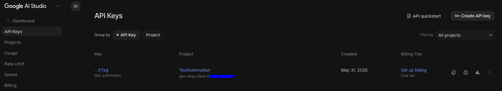
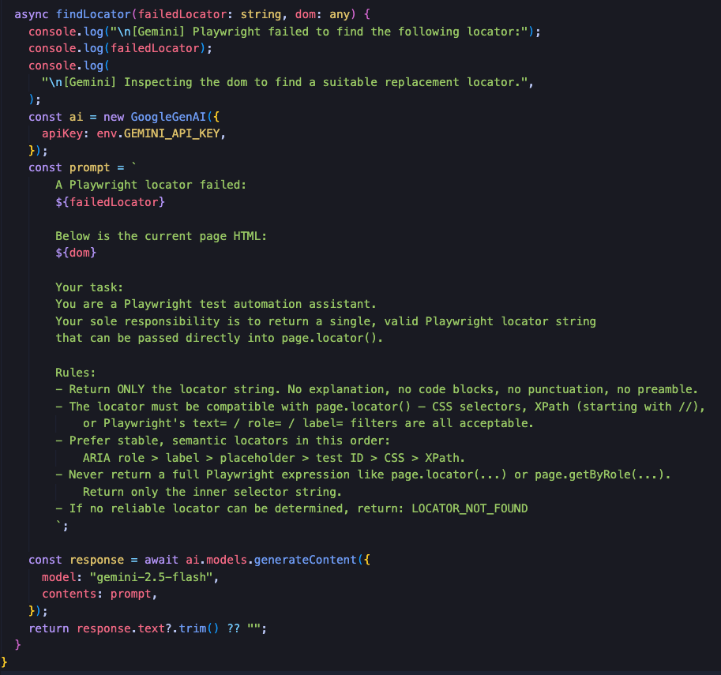
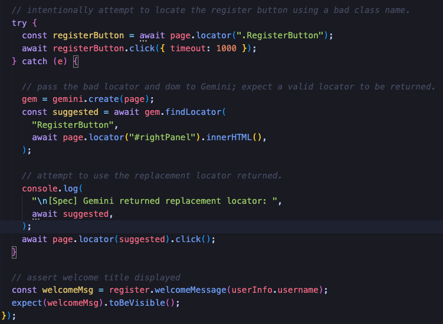
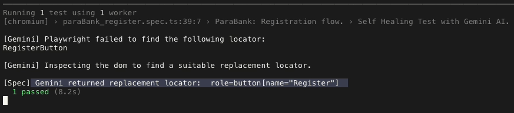

In a previous post I touched on setting up a local LLM using Ollama
and Qwen2.5 and how to interact with the LLM via the localhost API.
Down the road this had me thinking about how I could leverage the
local LLM or a cloud-based LLM to create a self-healing layer for
Playwright tests.
In this post, I will share the approach I took to integrate Google
Gemini into a Playwright setup, along with some of the benefits and
challenges I encountered along the way.
Register a Project in Google AI Studio
Accessing the Gemini API requires registering a project in Google AI Studio and obtaining an API key. This process involves setting up billing information, creating a new project, and enabling the Gemini API for that project. Once you have your API key, you can use it to authenticate your requests to the Gemini API from your Playwright tests.Navigate to: https://aistudio.google.com/ and follow the instructions on how to create a new project and obtain an API Key.

Interacting with the Gemini API
Since I am primarily interested in using Gemini to resolve page locators that cannot be found, I created a simple helper method that takes the failed locator along with the page dom as parameters and processes them with a well written prompt that is sent to the Gemini API.
The most challenging part of this process was developing the prompt. Since I am in the experimental phase of the project and am using the Gemini Free Tier, I had to be mindful of token limits while developing a prompt that contained enough context for Gemini to understand the problem and deliver a useful page locator.
It took a lot of trial and error, but ultimately I decided to move forward with the prompt noted above. I plan on revisiting this again the future in order to develop a more concise prompt that delivers the same results.
Putting It All Together
With the Gemini helper method in place, I created an automation test spec that registers a user for an account on a ficticious banking website. To test the Gemini integration, I am intentionally attempting to locate the "Register" button using a bad locator in a try/catch block.When the test fails to find the Register button, the catch block is executed and the failed locator along with the page dom are sent to the Gemini helper method.

I wanted to add visibility into the process, so I added print statements to log the suggested locator returned by Gemini. The suggested locator is visibile in the Playwright test runner output.

The test spec file receives the suggested locator and attempts to locate the Register button, then attempts a click action.
The End Result The Register button is successfully located and clicked, allowing the test to proceed to the next step which is to assert the welcome message is displayed confirming the user has successfully registered for an account.